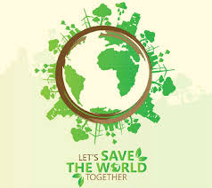

reading response week 02
In these two readings, they talk about new technologies, and how technologies changed our life and society. Websites, especially, become more and more important now, and as a web developer, website should be a nice and good way to access. Also, not only think website as a tool, but also a lifestyle now. Less and less people are using diary to record their life now, but more and more of them are willing to share online. With more users online, on the other hand, I believe that web developers should also consider the environmental impacts in the web designs. Even though some designs are fancy and beautiful, but they may create more green house gas emission. They should know how to protect our environment as they are designing.

